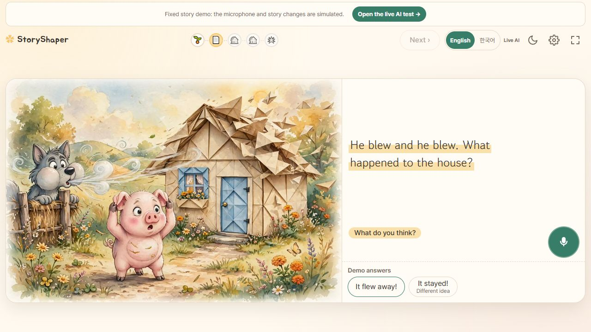

단일 통합 후보, 전체 116개 통과. 비교 후보가 없어 상대 순위 없음. 기준 main 18f92d5. 두 브랜치 병합과 이미지 전환 추가를 포함한다.
| 검증 | 통과 | 실패 |
|---|---|---|
| Python | 81 | 0 |
| Node UI | 35 | 0 |
실제 프로젝트의 unittest/Node test 하네스를 사용했다. 합격 기준은 계약·작업 취소/중복·구버전·HTTP·이미지 디코딩/실패·낭독 동기화의 회귀 실패 0이다. 취소 오류는 새 테스트를 넣은 수정 전 실행에서 25개 중 2개가 실패했고 수정 뒤 해결했다. 이 실행 범위는 최종 전체 116개와 다르므로 성능 증감으로 비교하지 않는다.
브라우저 1280×720에서 시작→종이집 선택→완료와 다음 늑대 장면을 확인했다. 스크린샷은 완료 상태의 증거이며 전환 프레임률을 증명하지 않는다. Fold8·실제 영상·GIF 재생·생성 API는 미실행이다. 외부 API 호출 0, 실제 모델·Cursor·Ralph 미사용. 설정 기본 1×5를 단일 회귀 작업에 확대 적용하지 않았다.
Python 원본 로그 · UI 원본 로그 · 취소 오류 수정 전 실패 로그 · 수정 후 로그 · 환경·명령·소스 해시실행 소스는 로컬 .tmp/integration-report/source에 격리 복사했다. 상세 구현 내용과 재현 명령은 상위 Markdown 보고서에 기록했다.
